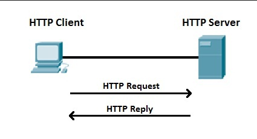

Роутинг в Express.js
 Konstantin Zolotarev Langa Inc.
Konstantin Zolotarev Langa Inc.
Konstantin Zolotarev
 Konstantin Zolotarev Langa Inc.
Konstantin Zolotarev Langa Inc.
Langa Inc
HTTP = HyperText Transfer Protocol
Основной протокол передачи данных в интернете
Адрес который мы набираем в браузере
Последовательность из любых символов, указывающая на основную операцию над ресурсом req.method
Код ответа сервера на запрошеную операцию
Express.js содержит 2 объекта req и res
Которые передаются в любой роут
req - Request (данные запроса)res - Response (данные ответа)
var express = require('express');
var app = express();
app.get('/', function (req, res) {
res.send('Hello World!');
});
app.listen(3000, function () {
console.log('Example app listening on port 3000!');
});
Роут состоит из 3 частей
const address = '/hello'
const middleware = function (req, res, next) {
/* ... */
// next(new Error('Error !'))
next() // <-- обязательно вызвать !
}
const controller = function (req, res) { /* ... */ }
app.get(address, middleware, controller)
app.all('/', function (req, res) { /* ... */});
app.get('/', function (req, res) { /* ... */});
app.post('/', function (req, res) { /* ... */});
app.put('/', function (req, res) { /* ... */});
app.delete('/', function (req, res) { /* ... */});
Адрес: http://localhost:3000/hello
app.all('/hello', function (req, res) { /* ... */})
app.get('/hello', function (req, res) { /* ... */})
app.post('/hello', function (req, res) { /* ... */})
app.put('/hello', function (req, res) { /* ... */})
Адрес: http://localhost:3000/hello/any
app.all('/hello/*', function (req, res) { /* ... */})
app.get('/hello/*', function (req, res) { /* ... */})
app.post('/hello/*', function (req, res) { /* ... */})
app.put('/hello/*', function (req, res) { /* ... */})
Адрес: http://localhost:3000/hello/any
app.get('/hello/:name', function (req, res) { /* ... */})
app.all('/hello/:name', function (req, res) {
console.log(req.params.name)
})
Адрес: http://localhost:3000/hello/any
app.get(/*.fly$/, function (req, res) { /* ... */})
app.all(/*.fly$/, function (req, res) {
console.log(req.params.name)
})
http://localhost:3000/hello?name=Konstantin
req.query
app.get('/hello', function (req, res) {
console.log(req.query.name)
})
POST http://localhost:3000/hello
{ "name": "Konstantin" }
app.get('/hello', function (req, res) {
console.log(req.body.name)
})
Express.js предоставляет богатый API для ответов сервера.
Данный API будет содержаться в переменной res переданной в контроллер
Основной ответ сервера в Express.js это res.send('Some')
app.get('/hello', function (req, res) {
/* ... */
res.send('Hello !')
})
// equivalent to res.status(200).send('OK')
res.sendStatus(200);
// equivalent to res.status(403).send('Forbidden')
res.sendStatus(403);
res.sendStatus(404);
res.sendStatus(500);
res.json(null);
res.json({ user: 'tobi' });
res.jsonp(null); // => null
res.jsonp({ user: 'tobi' }); // => { "user": "tobi" }
res.status(500).jsonp({ error: 'message' });
// => { "error": "message" }